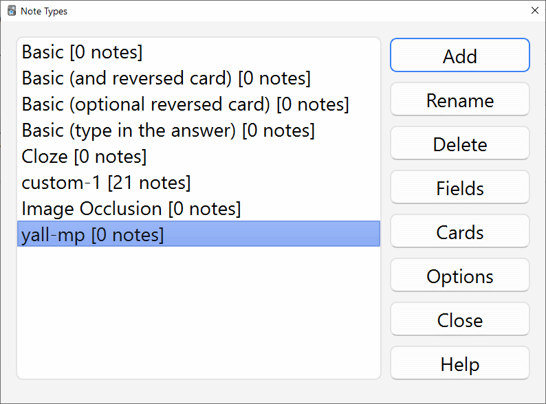
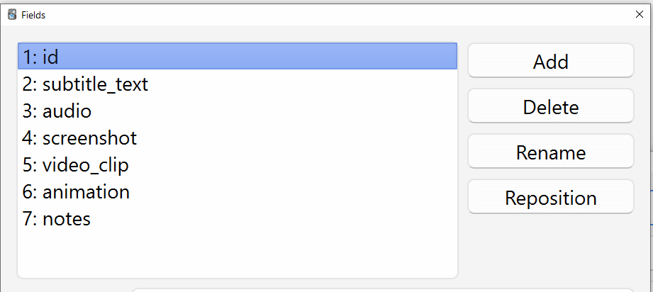
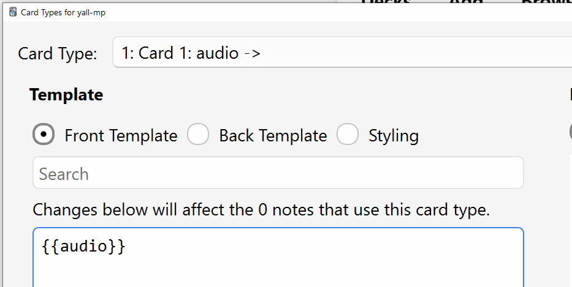
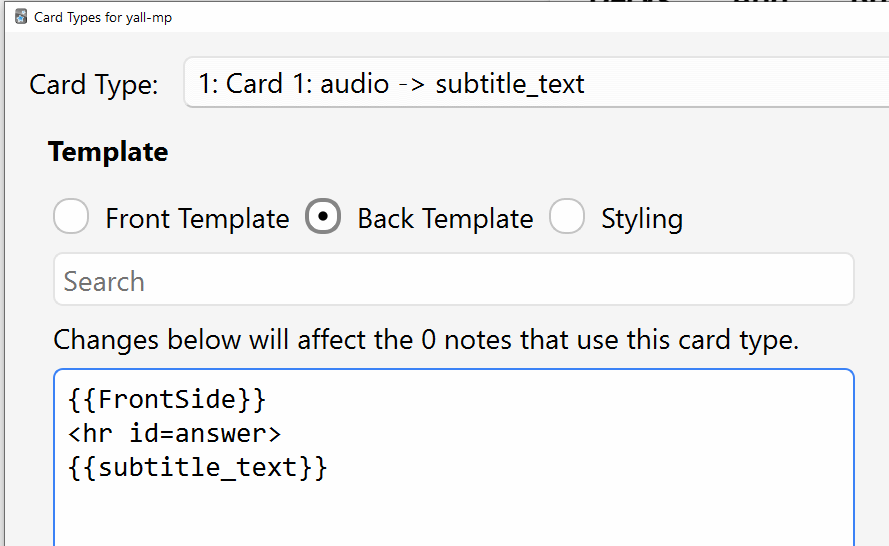
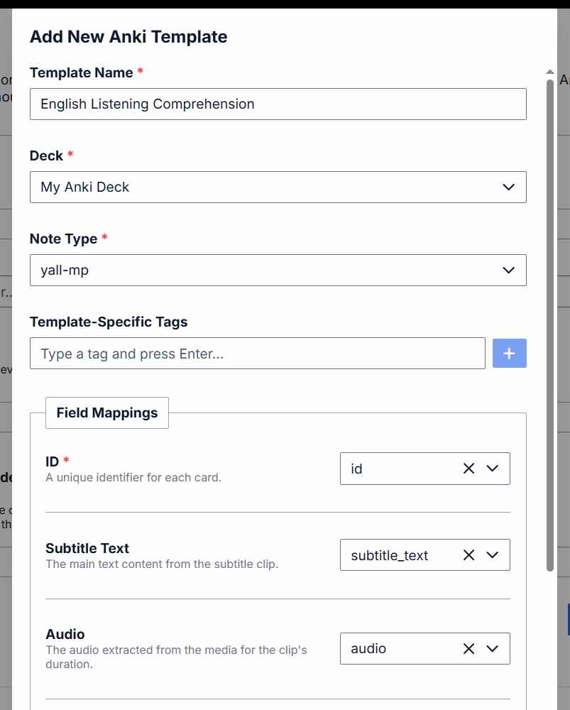
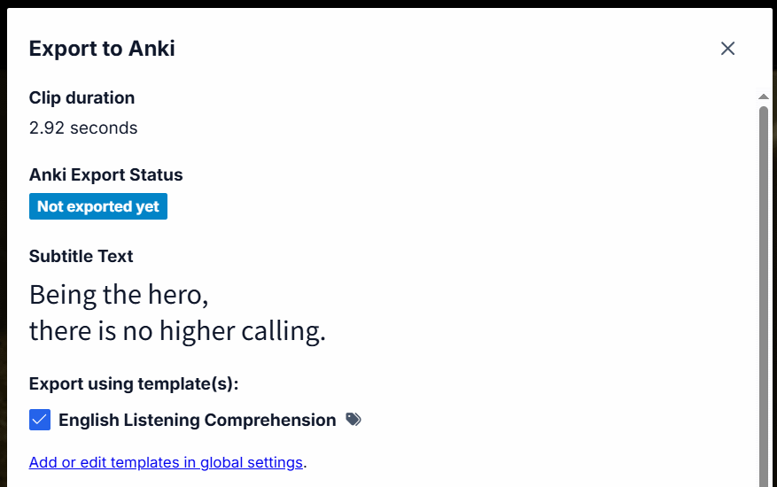

Integracja z Anki
Anki to program do fiszek, który pomaga spędzać więcej czasu na nauce nowych rzeczy, a mniej czasu na tym, co już umiesz.
- Zainstaluj Anki na swoim komputerze i zaloguj się na darmowe konto.
-
Zainstaluj dodatek AnkiConnect w Anki. Po instalacji zrestartuj Anki, aby zmiany weszły w życie. Sprawdź, czy instalacja przebiegła pomyślnie, wchodząc na adres localhost:8765 w przeglądarce. Powinieneś zobaczyć coś w stylu
{"apiVersion": "AnkiConnect v.6"} - Stwórz nową talię w Anki ("Create Deck" na dole okna) i nazwij ją odpowiednio (np. "Angielska wymowa", "Hiszpańskie rozumienie ze słuchu" itp.). Konfiguracja opcji talii wykracza poza zakres tego poradnika - sprawdź oficjalną dokumentację Anki, aby dowiedzieć się więcej - jednakże na ten moment domyślne ustawienia powinny wystarczyć.
-
W Anki wybierz "Tools" -> "Manage Note Types" z menu:
• Kliknij przycisk "Add".
• Kliknij "OK" z zaznaczoną opcją "Add: Basic".
• Nadaj nazwę szablonowi, np. "yall-mp", potwierdź.
• Typ notatki pojawi się na liście:

-
Z zaznaczonym nowym typem notatki (jak na zrzucie ekranu powyżej), kliknij przycisk "Fields" - pojawi się nowe okno:
• Tutaj możesz skonfigurować pola dla elementów eksportowanych przez Y'ALL Media Player.
• Potrzebujesz osobnego pola na "id" oraz przynajmniej 1 pola z: "subtitle_text", "audio", "screenshot", "video_clip", "animation", "notes".
• Możesz usunąć domyślne pola "Front" i "Back".
• Powinieneś uzyskać efekt podobny do tego:
 Tutaj używam wszystkich dostępnych pól, ale Ty nie musisz tego robić. Jeśli masz pewność, że nie będziesz potrzebować np. klipu wideo, możesz pominąć pole "video_clip" itd. Pamiętaj, że pole "id" oraz co najmniej 1 inne, z wymienionych powyżej, są wymagane do poprawnej integracji.
• Po dodaniu wszystkich potrzebnych pól, naciśnij "Save" aby wyjść z okna dialogowego "Fields" i wrócić do okna dialogowego "Note Types". -
Teraz ostatni krok, upewnij się, że twój typ notatki jest nadal zaznaczony, i kliknij przycisk "Cards":
• Tutaj możesz skonfigurować przód i tył fiszki - które pola gdzie się wyświetlą itp.
• Możesz użyć dowolnego HTML i CSS, ale dla uproszczenia stworzymy bardzo podstawowy szablon.
• Wszystko zależy od typu karty, jaki chcesz uzyskać. Y'ALL Media Player wspiera eksport wielu typów kart naraz.
• Dla uproszczenia załóżmy kartę do ćwiczenia słuchu - "audio" z przodu, "subtitle_text" z tyłu.
• Wybierz opcję "Front Template" (powinna być domyślnie zaznaczona) i wklej kod "{{audio}}" w duże pole tekstowe poniżej:

• Teraz wybierz opcję "Back Template" i wklej poniższy kod w pole tekstowe:
{{FrontSide}}
<hr id=answer>
{{subtitle_text}}

• Kliknij "Save" aby zapisać i wyjść, zamknij też okno "Note Types".
• To najprostszy możliwy szablon - aby dowiedzieć się więcej, sprawdź dokumentację Anki.
• Możesz dodać tyle szablonów, ile potrzebujesz - np. osobny ćwiczenia wymowy (tekst z przodu, audio z tyłu). - Zawsze miej włączone Anki w tle podczas używania Y'ALL Media Player. Aplikacja wykryje Anki automatycznie.
-
W Y'ALL Media Player otwórz ustawienia (skrót: O), przejdź do zakładki "Anki integration" i skonfiguruj nowy szablon - powinieneś widzieć swoją talię i typ notatki:

-
Wszystko powinno działać. Odtwórz klip z napisami i naciśnij E lub kliknij prawym przyciskiem na klip i wybierz "Export to Anki". Pamiętaj o wybraniu szablonu i kliknięciu Export:
